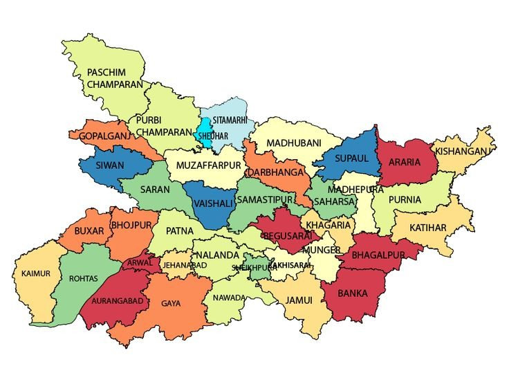
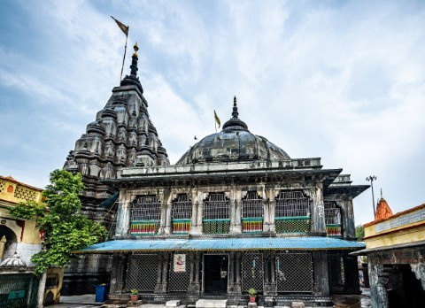
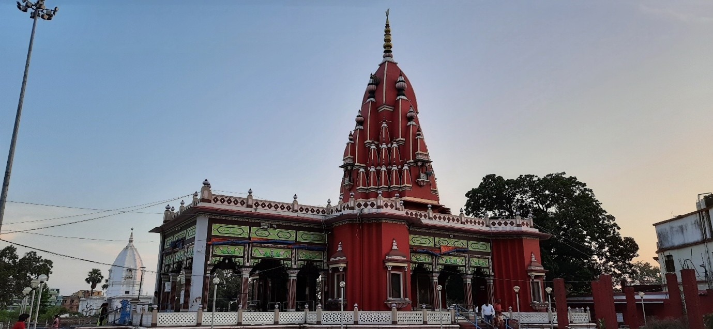
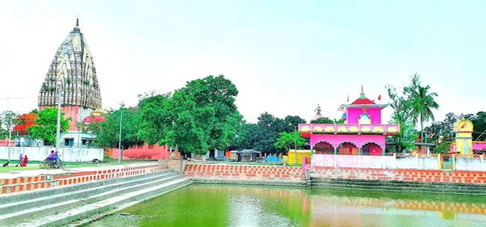

Bihar
Bihar, a state in eastern India, is a mosaic of diverse religious traditions, each contributing to its rich cultural heritage. The state's landscape is dotted with temples, each narrating stories from ancient scriptures and local lore.

Temple and Their Mythological Significance
1. Vishnupad Temple (Gaya)
Significance:
- One of the most revered temples dedicated to Lord Vishnu.
- The temple has a footprint of Lord Vishnu engraved on a basalt rock, which is worshipped as a divine relic.
Mythological Story:
- The legend states that the demon Gayasura performed severe penance, which made him so pure that anyone who touched him attained moksha (salvation).
- The gods, fearing that this would disrupt the cycle of life and death, requested Lord Vishnu to intervene.
- Vishnu subdued Gayasura by placing his foot on his chest, which left an imprint.
- The temple was built around this sacred footprint.
Cultural Relevance:
- Gaya is an important center for pind-daan (rituals for deceased ancestors), where Hindus from all over India visit to offer prayers for their ancestors.

2. Shyama Mai Temple (Darbhanga)
Significance:
- Dedicated to Goddess Kali (Shyama Mai), one of the most powerful forms of Shakti.
Mythological Story:
- The temple was established by the Royal Family of Darbhanga.
- Many devotees believe that this site is one of the Shakti Peethas, where parts of Goddess Sati’s body fell.
- It is said that praying here grants divine protection and fulfillment of wishes.
Cultural Relevance:
- The temple becomes a major religious center during Navaratri and Kali Puja.
- Thousands of devotees offer prayers and sacrifices, and the city of Darbhanga hosts large religious gatherings.

3. Ahilya Sthan Temple (Kamtaul, Darbhanga)
Significance:
- This temple is dedicated to Goddess Ahilya, wife of Sage Gautama.
Mythological Story:
- According to the Ramayana, Ahilya was cursed by her husband, Sage Gautama, and turned into a stone.
- Lord Rama, during his exile, stepped on the stone and liberated her, bringing her back to life.
- The temple stands at the very site where Ahilya was redeemed by Lord Rama’s touch.
Cultural Relevance:
- Ram Navami is celebrated with great devotion at this temple.
- It is a sacred place for those seeking divine grace and blessings.
